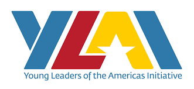
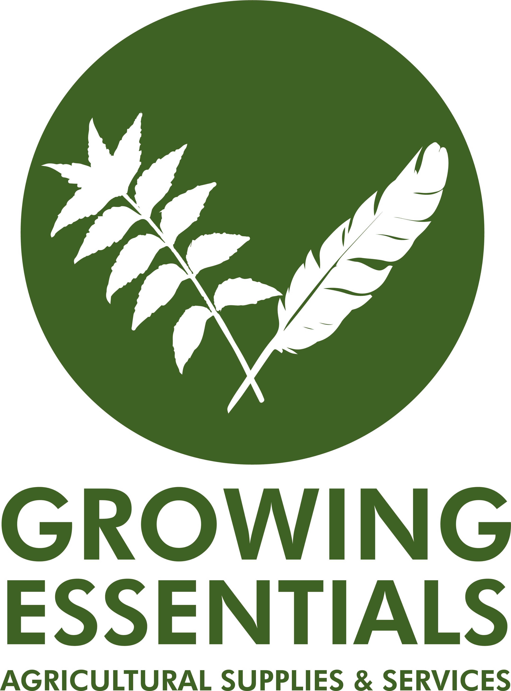

FREE
💧
Irrigation Workshops
Hover / Tap
Free introductory workshops on drip irrigation installation, maintenance, water conservation, and efficient irrigation practices.

Climate‑Smart Agricultural Solutions
Today, agriculture produces nearly one‑third of global greenhouse gas emissions, while over 670 million people still face hunger.
My name is Dharnel Duprey, founder of Growing Essentials. We build climate‑smart agricultural solutions that help communities grow more food sustainably while creating economic opportunities.
Explore our free community programs, professional paid services, and consultation booking.
Free introductory programs to empower farmers, gardeners, and community members with climate-smart skills.
Hover / Tap
Free introductory workshops on drip irrigation installation, maintenance, water conservation, and efficient irrigation practices.
Hover / Tap
Sessions introducing automation, precision agriculture, solar-powered systems, and sustainable methods for small and medium farms.
Hover / Tap
Hands-on training on climate-smart agriculture, regenerative practices, soil health, composting, and responsible food production.
Hover / Tap
Live demonstrations at the Growing Essentials farm showcasing techniques, irrigation systems, crop management, and sustainable solutions.
Hover / Tap
Interactive programs for students and youth groups to promote agriculture, food security, sustainability, and agribusiness opportunities.
Professional services for farms, properties, and organizations—designed for performance and sustainability.
Hover / Tap
Detailed training on drip irrigation design, installation, troubleshooting, water management, and advanced techniques for commercial operations.
Hover / Tap
One-on-one consulting for farm setup, crop planning, irrigation systems, sustainability strategies, and operational improvements.
Hover / Tap
Installation and setup for smart farming technologies: timers, automation, water-saving solutions, and solar-powered systems.
Hover / Tap
Professional tree cutting, brush clearing, overgrown property cleanup, and land preparation for residential, agricultural, and commercial properties.
Hover / Tap
Grass cutting, garden maintenance, planting, property beautification, and outdoor space management.
Hover / Tap
General property upkeep for farms and land: monitoring, cleaning, maintenance coordination, and site management.
Hover / Tap
Removal of agricultural waste, green waste, construction debris, and unwanted materials with environmentally responsible disposal practices.
Hover / Tap
Customized workshops and training for organizations, schools, businesses, NGOs, and farming groups interested in sustainable and modern farming techniques.
Hover / Tap
Support for starting or expanding farms: layout planning, irrigation recommendations, sustainability integration, and operational guidance.
Hover / Tap
📞 1‑868‑278‑1674
📧 growingessentialstt@gmail.com


We don’t just install systems. We educate and empower individuals to turn agriculture into long‑term income‑generating opportunities.
We must produce more food without harming the planet. Our goal is to build a future where agriculture is productive, sustainable, and resilient for people and the environment.